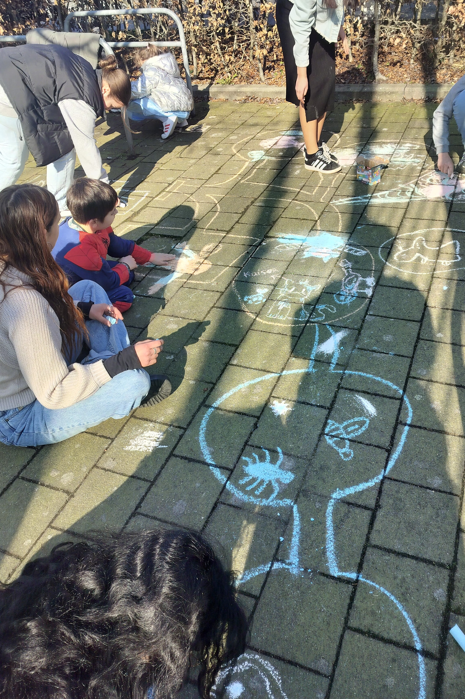
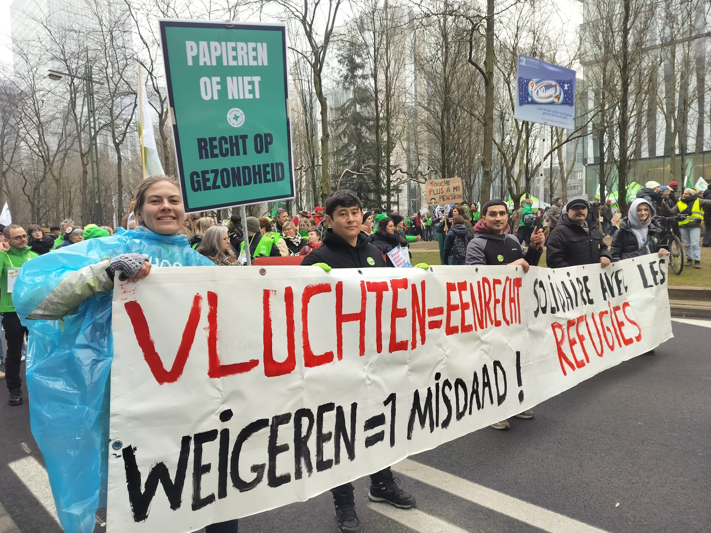

Onze visie
Alle mensen zijn gelijkwaardig en hebben dezelfde fundamentele rechten.
Ieder persoon, wiens leven, integriteit of vrijheid bedreigd wordt, heeft recht op bescherming.
Politieke, economische en ecologische vluchtelingen, asielzoekers, uitgeprocedeerde vluchtelingen en mensen zonder wettig verblijf, hebben allen recht op de sympathie, bijstand en gastvrijheid van VLOS.
Vluchtelingen zijn van alle tijden. De wereldsituatie, waarin de kloof tussen rijk en arm steeds groter wordt, zal de migratie en vluchtelingenstromen nog doen toenemen. Vluchtelingen zullen steeds naar ons blijven toekomen.
Daar waar de overheid tekort schiet in het waarborgen van de vluchtelingenrechten, moet VLOS voor hen opkomen.

Onze Missie
Daadwerkelijke hulp bieden aan vluchtelingen zonder wettig verblijf op alle terreinen, zowel menselijk, administratief, materieel als juridisch.
Activiteiten ontplooien ter bevordering van hun integratie.
Deelname aan overleg op lokaal, regionaal en nationaal niveau.
Schending van de rechten van de vluchtelingen aan de kaak stellen en aankaarten bij de lokale overheden en doorspelen aan nationale en internationale organisaties zoals Vluchtelingenwerk Vlaanderen, Unia, Federaal Migratiecentrum MYRIA, Netwerk tegen Armoede, Amnesty International e.a.
Acties voeren om het maatschappelijk draagvlak te verbreden voor de principes opgesomd in onze visie.

Voor een heldere analyse van de VLOS-missie verwijzen we naar de boodschap van Dr. Piet Willems, die hij schreef in december 2019 bij zijn afscheid als lid van de Raad van bestuur van VLOS.